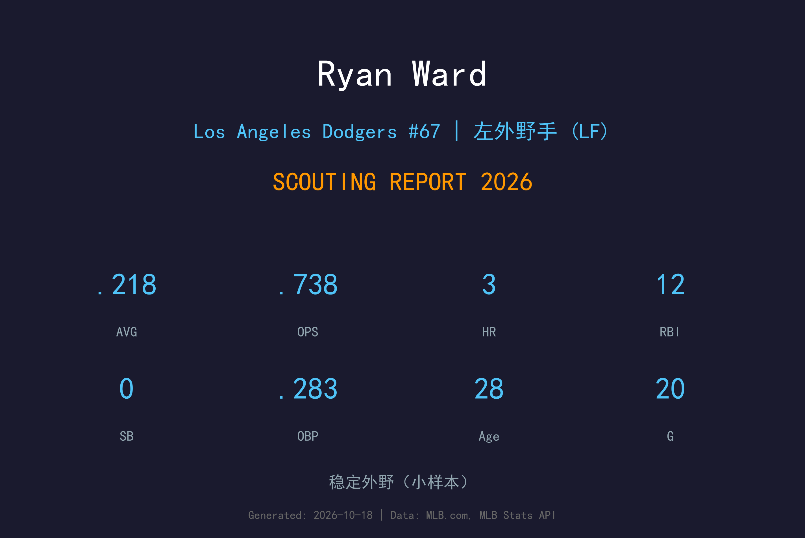
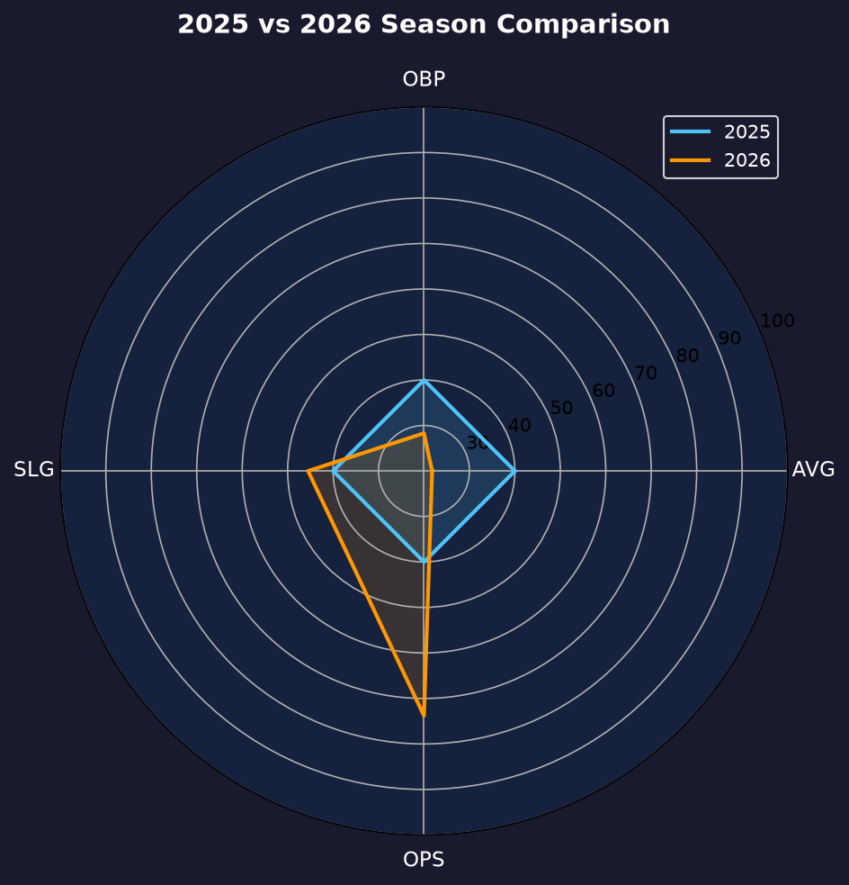
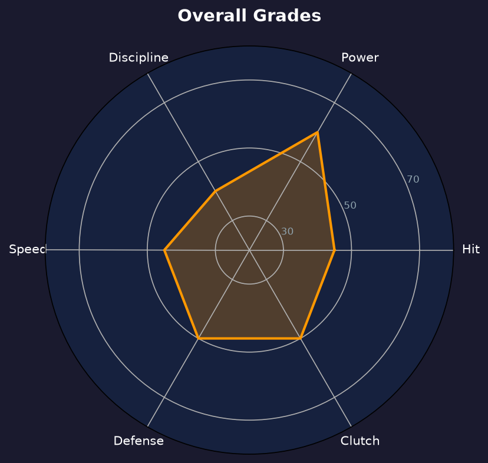

Los Angeles Dodgers #67 | 外野手 | 左打 / 右投 | 28 岁首秀型 depth 外野

Ryan Ward 是道奇农场体系培养多年的左打 corner 外野手，在 3A Oklahoma City 沉浮数年后，于 2026 年 4 月 19 日、28 岁这年终于完成大联盟首秀——属于典型的大龄新秀。
2026 年他两度被召回，合计出赛 20 场：55 打数 12 安，3 轰 12 分打点，缴出 .218/.283/.455、OPS .738。12 支安打中 7 支是长打（4 二垒打 + 3 轰），.237 ISO 的长打效率相当亮眼；但 17 三振仅 5 保送，三振率 26.2% 接近三成，是他无法站稳的致命伤。
9 月 16 日道奇在名单整理时将他 DFA，9 月 22 日直接释出——Ward 的道奇生涯止步于 20 场。他的长打直觉值得另一支球队的小联盟合约，但 28 岁的年龄让"潜力"二字基本失效。
在开季名单之外从 3A Oklahoma City 被召回，完成迟来但实至名归的 MLB 首秀。作为道奇农场多年的重炮外野手，这一刻他等了超过六年。
有限出赛里缴出 .455 长打率、.738 OPS：55 打数 12 安中 7 支长打，平均每 4.6 打数就有一支长打，得点圈效率尤其突出。
9 月 16 日道奇为季后赛名单空间将他 DFA，9 月 22 日释出。20 场 .218 的成绩单未能换来续约，结束了他的道奇生涯。
小样本警告：60 打席。长打分布（.237 ISO）是真的亮点，但 26.2% 三振率意味着他的 contact 不足以支撑 everyday 角色。

| 赛季 | 层级 | G | AVG | OBP | SLG | OPS | HR | RBI |
|---|---|---|---|---|---|---|---|---|
| 2025 | 3A Oklahoma City | — | — | — | — | — | — | — |
| 2026 | MLB（道奇首秀年） | 20 | .218 | .283 | .455 | .738 | 3 | 12 |
2025 年整季在 3A 度过（未上过大联盟）。2026 是他的 MLB 菜鸟年——20 场的样本里，.455 长打率与 12 分打点展示了他的核心武器（对球的强劲 contact），而 .283 上垒率与 26.2% 三振率则说明他离完整打者还有距离。28 岁新秀的养成窗口极短，道奇选择不在他身上继续投资。
55 打数 12 安里有 3 轰 4 二垒打，.237 ISO 放到全联盟外野手都属于中上水准。Ward 的挥棒路径有自然的上挑角度，对速球内侧的应对尤其好——12 分打点里有大量是"一球定江山"的关键一击。这类"低 AVG 高 SLG"的轮廓在3A 长年是他的标签。
60 打席 17 三振（28.3% PA 三振率）意味着每四个打席就有一次空手而归。左打 depth 外野的市场要求至少是"能站稳不被三振"，Ward 的挥空率让教练团无法在关键局面派他上场——这直接压缩了他的可用场景，也解释了为什么 20 场后就被放弃。
Ward 的防守范围适合左外野而非中外野，臂力与基本传球合格，但没有 elite 守备为他加分。当"防守型替补"这条路走不通、"长打型 pinch hitter"又被三振率拖累时，他在道奇的角色就只剩下"3A 等电话的人"——而道奇最后连电话线也拆了。

有长打直觉但 contact 不及格的 depth 外野
B- 级 / 名单边缘
Ward 的 2027 年将从另一支球队的小联盟合约开始——他的长打能力在 3A 是真实的，大联盟球队在需要左打 power bench bat 时会想起他。但 29 岁的年龄要求他必须立刻把三振率压回 25% 以下，否则"大龄 3A 重炮"的标签会很快变成"前职业球员"。
2026：4/19 大联盟首秀；两度召回合计 20 场（.218/.283/.455、3 轰 12 打点）；9/16 DFA、9/22 被释出
2027：小联盟合约漂流，争取 power bench bat 角色
2028+：若三振率无改善，可能流向 independent league 或海外
Ryan Ward 1998 年 2 月 23 日出生于马萨诸塞州伍斯特（Worcester, Massachusetts）。他在道奇农场体系中度过了整个职业生涯早期——从低阶 1A 到 3A Oklahoma City，一路以"左打重炮"的标签缓慢爬升。小联盟岁月里，他的长打产量始终亮眼，但高三振率与平庸的防守让他在每个层级都停留得比别人久。
2026 年 4 月 19 日，28 岁的 Ward 终于接到那通电话。他在有限的 20 场出赛里抓住了展示自己的机会：55 打数 12 安、3 轰、12 分打点，.455 的长打率证明了他的核心武器在大联盟同样有效。但 17 次三振也暴露了同样明显的问题——他的挥棒里住着天使与魔鬼。
9 月 16 日，道奇为季后赛名单空间将他 DFA，六天后正式释出。六年的等待换来 20 场大联盟，这段旅程算不上成功，但也绝不算失败——不是每个 31 轮般的低顺位球员都能等到自己的 20 场。Ward 的故事是农场体系深处千万个"差一点"的缩影：差一点的 contact、差一点的年龄、差一点的运气。